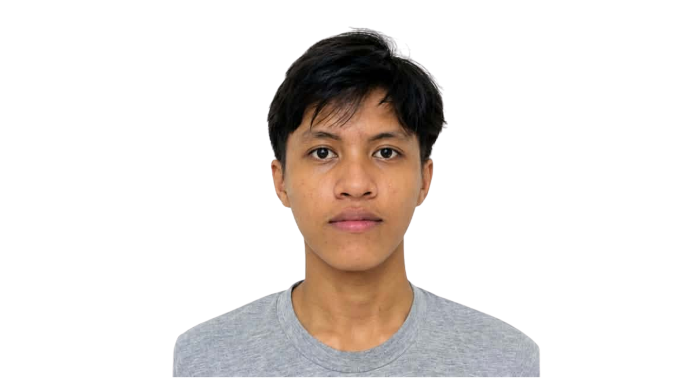
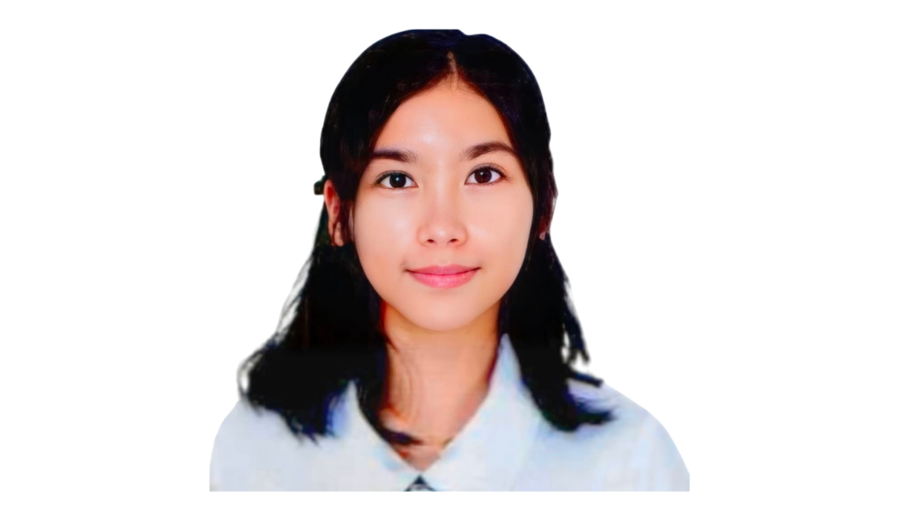

Marine biodiversity
Philippine waters support diverse marine ecosystems, including coral reefs, mangroves, seagrass, fish, turtles, birds, and other wildlife (Baclig, 2024).
FIELD NOTES FROM THE PHILIPPINE SEAS · 01
Beneath the waves lies a world full of life. But plastic pollution and human activities are changing the waters we depend on. Follow the journey from streets and rivers to the coast, discover what is at stake for marine life and coastal communities, and explore the choices that can help protect our shared sea (Climate Impact Tracker, 2024; Earth.Org, 2023; Baclig, 2024).
Before the story of pollution, meet the sea.
01 — SURFACE
Across the Philippine archipelago, the ocean is not scenery at the edge of the map. It is habitat, food source, workplace, route, and home. When coastal ecosystems are under pressure, the effects can travel into both nature and everyday life.
Philippine waters support diverse marine ecosystems, including coral reefs, mangroves, seagrass, fish, turtles, birds, and other wildlife (Baclig, 2024).
Healthy coastal waters support fisheries and provide food and livelihoods for communities that depend on marine resources (Baclig, 2024).
Pollution can reach beyond the water itself, affecting communities, tourism, livelihoods, and the places people call home (Baclig, 2024).
Healthy marine environments contribute to ecological, social, and economic well-being. Protecting them is a shared responsibility (Baclig, 2024).

02 — DIVE
Picture rain gathering along a street. It sweeps a discarded wrapper toward a drain, then a stream, then a river. By the time the current reaches the coast, the person who dropped the wrapper may be miles away—but the material is still there. Land-based waste and river transport are important parts of the plastic-pollution story in the Philippines (Climate Impact Tracker, 2024; Earth.Org, 2023).
03 — DEEPER
A piece of plastic can outlast the moment it was used. It may fragment, move through waterways, and become part of a much larger pollution problem. The figures below come from published sources and different reporting periods; they are snapshots of the problem, not a single current measurement (Earth.Org, 2023; Climate Impact Tracker, 2024).
Single-use packaging is part of daily life, but after it is discarded, waste can move through streets, drainage, and waterways toward the coast. Earth.Org describes river transport as a key pathway linking land-based plastic waste to the ocean (Earth.Org, 2023).
Urban runoff, improper disposal, gaps in waste collection, and flooding can move plastic toward rivers and eventually the ocean. That means marine pollution is also a story about the systems we build on land (Climate Impact Tracker, 2024).

04 — BELOW THE SURFACE
For a fishing family, the sea is not an abstract landscape. It is the place they leave from before sunrise and the source of the day’s work. In July 2024, vessel incidents around Manila Bay raised concerns about oil contamination, coastal habitats, seafood safety, and livelihoods (Baclig, 2024).
Inquirer reported that MT Terra Nova, carrying 1.4 million liters of industrial fuel oil, sank off Bataan on July 25, 2024. Other vessel incidents followed (Baclig, 2024).
Oil can threaten habitats such as mangroves, coral reefs, and seagrass beds, which support marine species (Baclig, 2024).
Fishing restrictions and contamination concerns can interrupt income and access to seafood in affected areas (Baclig, 2024).
Authorities advised avoiding contaminated waters and seafood from affected areas unless cleared by appropriate authorities (Baclig, 2024).

05 — BELOW THE SURFACE
A floating bottle is easy to notice. Changes to a habitat, risks to wildlife, or disruption to a food web may be harder to see. The 2024 Manila Bay oil-spill reporting highlighted concerns for mangroves, coral reefs, seagrass, marine life, and the people whose livelihoods depend on the bay (Baclig, 2024).


06 — FOLLOW THE CURRENT
Return to that rainy street. This pathway is a simplified example, not the route every item takes—but it shows how choices on land can become a problem downstream (Climate Impact Tracker, 2024; Earth.Org, 2023).
07 — HUMAN TIDE
When pollution affects water quality, fishing activity, or access to coastal resources, the consequences can move from ecosystems into household routines and local economies. Reporting on the 2024 Manila Bay incidents documented concerns about fisheries, health precautions, and lost income (Baclig, 2024).
Fishing disruptions can mean lost income for fisherfolk and related businesses (Baclig, 2024).
Pollution incidents can create concerns about the safety and availability of seafood from affected areas (Baclig, 2024).
Communities near polluted waters can face cleanup, environmental, and access challenges (Baclig, 2024).
Polluted beaches and damaged marine environments can reduce the appeal and value of coastal destinations; this is a general potential impact rather than a quantified finding in the listed sources (contextual inference, not a measured result in the listed articles).
08 — RISE
No single action can solve marine pollution alone. Waste prevention, reliable collection, community education, habitat protection, and stronger systems all have a role in reducing the flow of pollution toward the sea (Climate Impact Tracker, 2024; Earth.Org, 2023).
SMALL ACTIONS, SHARED CURRENT
Select the actions you already practice. This is not a scientific score—just a small reflection tool.
09 — RETURN TO THE SURFACE
Each claim should be traceable to a source. The citations throughout this page point to the articles used for the plastic-pollution and Manila Bay sections; dates and contexts are kept with the figures they support.
photo-1500375592092-40eb2168fd21. View exact image asset ↗photo-1611284446314-60a58ac0deb9. View exact image asset ↗photo-1618477461853-cf6ed80faba5. View exact image asset ↗photo-1582967788606-a171c1080cb0. View exact image asset ↗photo-1546026423-cc4642628d2b. View exact image asset ↗photo-1530053969600-caed2596d242. View exact image asset ↗10 — THE PEOPLE BEHIND THE PROJECT
Created as a collaborative Grade 12 STEM A project by


The ocean is a world within our world, reminding us that even the smallest ripple can reach the farthest shore, and every life is connected beneath the endless blue.
DESIGN DIRECTION • 09/23/26